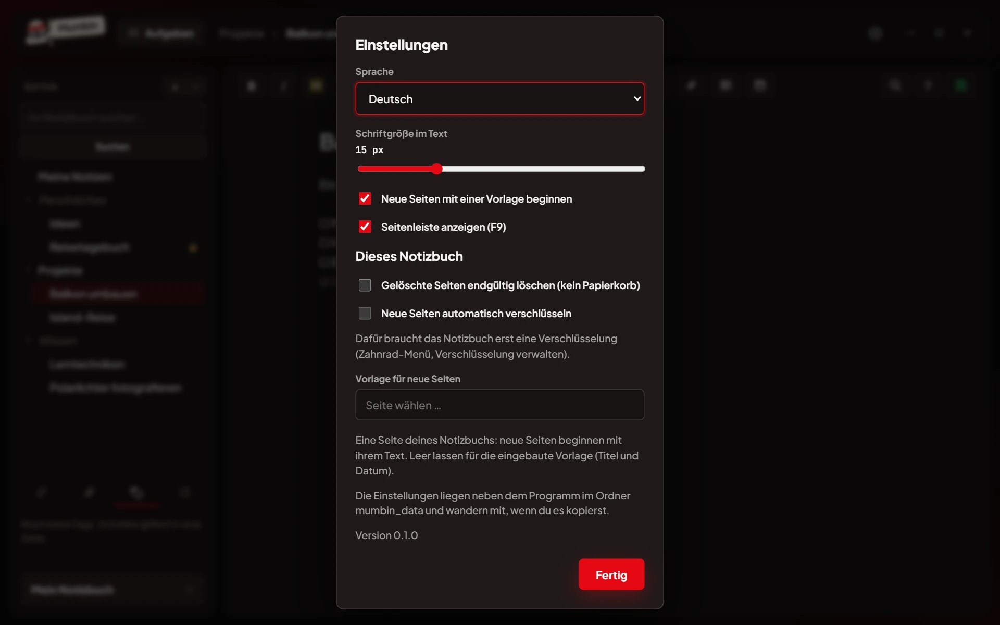

Alle Beiträge / Ratgeber / 5 Min. Lesezeit
Deine Notizen gehören dir: Textdateien, offene Formate und ein Notausstieg
Gute Notizen sollen länger halten als jedes Programm. Deshalb legt Mumbin sie als einfache Dateien ab und dokumentiert sogar das Verschlüsselungsformat.
Dateien statt Datenbank
Viele Notiz-Programme legen alles in einer eigenen Datenbank ab. Mumbin geht einen anderen Weg: Jede Seite ist eine Textdatei. Das Notizbuch ist ein ganz normaler Ordner. Du kannst ihn mit jedem Programm sichern, durchsuchen oder versionieren und mit Windows-Bordmitteln kopieren.
Warum das ein Vorteil ist
- Lesbarkeit: Ungeschützte Seiten öffnest du notfalls mit dem Texteditor.
- Sicherung: Backups sind Ordner-Kopien, ohne Spezialwerkzeug.
- Unabhängigkeit: Deine Notizen hängen an keinem Konto und an keinem Dienst.
- Mitnahme: Ein Ordner passt auf jeden Datenträger.
Auch geschützte Inhalte bleiben zugänglich
Verschlüsselte Seiten sind kein Gefängnis. Das Format ist offen: Du kannst es im Quellcode und im Kopf des Python-Werkzeugs nachlesen. Mit diesem unabhängigen Werkzeug und deinem Passwort entschlüsselst du ein Notizbuch auch dann, wenn Mumbin einmal nicht mehr verfügbar ist. Es schreibt eine entschlüsselte Kopie in einen neuen Ordner und überschreibt nichts.
Die genauen Schritte beschreibt die Anleitung „Notizbuch mitnehmen“. Das Werkzeug lädst du hier herunter. Voraussetzung ist Python 3 mit dem Paket pynacl.
Weitergeben als HTML
Für Leserinnen und Leser, die Mumbin nicht haben, exportierst du Seiten als HTML oder druckst sie. Beachte, dass entsperrte geschützte Seiten dabei im Klartext erscheinen.

Nachprüfbar statt „vertrau uns“
Der Quellcode von Mumbin ist öffentlich einsehbar. Automatische Tests prüfen den Kern, die Oberfläche und die echte EXE, auch Verschlüsselung und Angriffe auf Dateinamen. Mehr zum Schutz steht im Artikel Wie sicher ist Mumbin?
Häufige Fragen
In welchem Format speichert Mumbin Notizen?
Ungeschützte Seiten sind einfache Textdateien in einem Ordner deiner Wahl. Anhänge liegen in Ordnern daneben. Das Notizbuch selbst wird durch die kleine Datei notebook.mumbin beschrieben.
Kann ich meine Notizen exportieren?
Ja. Eine Seite, ein Seitenzweig oder das ganze Notizbuch lassen sich als HTML exportieren. Der Export legt Dateien in einem neuen Ordner ab und überschreibt nichts.